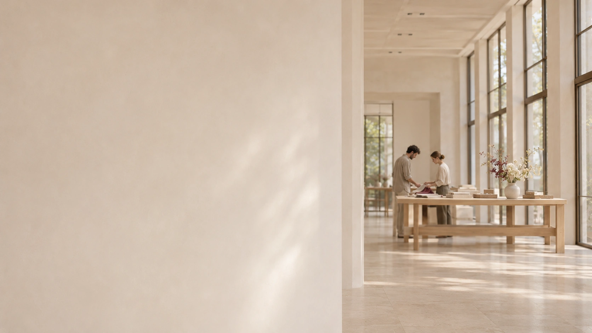
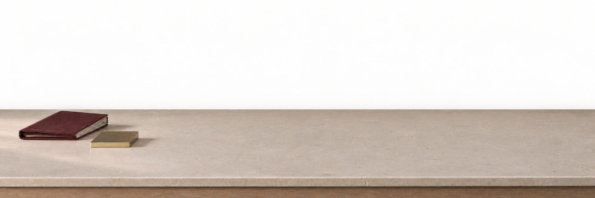

Портфолио
Портфолио01
Surf Coffee / бордовый текстиль
Текстиль, хвоя и свет

Декория / флористика и декор
Входные группы, витрины и интерьеры.
От концепции до монтажа.


01 / Портфолио
Входные группы: текстиль, флористика и свет.
Рассмотрите композиции в крупном плане.
ПортфолиоТекстиль, хвоя и свет
 Портфолио
ПортфолиоХвоя и световой занавес
 Портфолио
ПортфолиоВходная группа
 Портфолио
ПортфолиоВходная группа
 Портфолио
ПортфолиоДругой ракурс оформления
02 / Задачи
Кафе, магазин, салон или общественное пространство.
Одна зона или несколько точек оформления.
Флористика, текстиль и свет для дверного проёма и фасада. Масштаб композиции подбираем к архитектуре входа.
Обсудить входКомпозиции вокруг продукта и сезона. Цвет, флористика и декоративные элементы для пространства у стекла.
Обсудить витринуФлористические композиции и декоративные акценты для зала, стойки или зоны встречи гостей.
Обсудить интерьер03 / Визуальные направления
15 идей для разговора о цвете, фактуре и масштабе.
Выберите направление, которое хочется обсудить.
Показано 15 направлений

Входные группы

Витрины

Входные группы

Интерьеры

Входные группы

Витрины

Входные группы

Интерьеры

Витрины

Входные группы

Детали

Витрины

Интерьеры

Детали

Интерьеры
Одна идея. Все детали.
Сначала пространство. Затем цвет, фактура и свет. Из них складывается оформление вашего бизнеса.
Концепция или готовое ТЗ заказчика
Палитра проекта
Фактура, цвет и масштаб задают характер оформления. Собираем их в одну композицию под ваше пространство.
Выбрать визуальное направление
04 / Человек за проектом
Декоратор и руководитель студии
За оформлением стоит команда. За направлением проекта — Олеся.
Дизайнеры готовят эскизы и презентации, флористы и декораторы собирают композиции, монтажники устанавливают их на объекте.
Два способа начать
05 / Процесс
Фотографии, размеры зоны, дата и ориентир по бюджету помогают определить задачу.
Дизайнеры готовят эскизы и презентацию. Если у вас есть готовое ТЗ, работаем по нему.
Флористы и декораторы собирают оформление, монтажники устанавливают его на объекте.
Как обсудить стоимость
Подготовьте фото, примерные размеры зоны и желаемую дату. Если есть ориентир по бюджету, укажите его: так проще обсуждать материалы и масштаб.
На стоимость влияют объём оформления, материалы и условия монтажа.
Обсудить задачуПеред знакомством
Да. Команда разрабатывает индивидуальные концепции и работает по готовому техническому заданию заказчика.
Подготовьте фото, примерные размеры зоны и желаемую дату. Расчёт зависит от масштаба оформления, материалов и условий монтажа. Бюджет поможет обсудить подходящий состав.
Срок зависит от масштаба и материалов. Укажите дату в первом сообщении: возможность подготовки и монтажа нужно обсудить до согласования оформления.
Нет. Студия занимается живой и декоративной флористикой и оформлением коммерческих помещений. Сезонные входные группы в портфолио показывают одно из направлений.
06 / Ваш объект
Фото пространства и желаемая дата —
хорошее начало разговора.
Напишите Олесе в анкете Профи.ру. Можно отправить свой текст или подготовить короткое сообщение здесь.
Написать ОлесеПосле копирования откройте анкету по кнопке выше и отправьте сообщение Олесе.